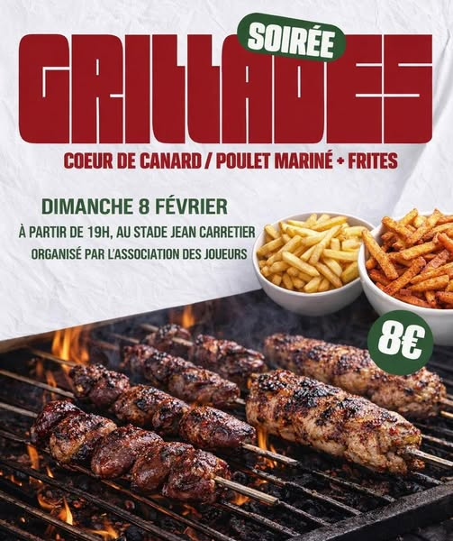
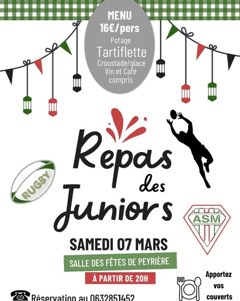
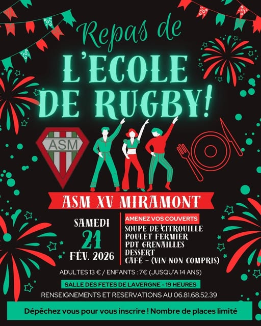
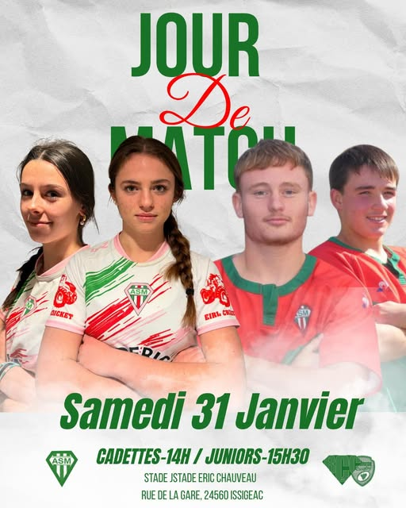
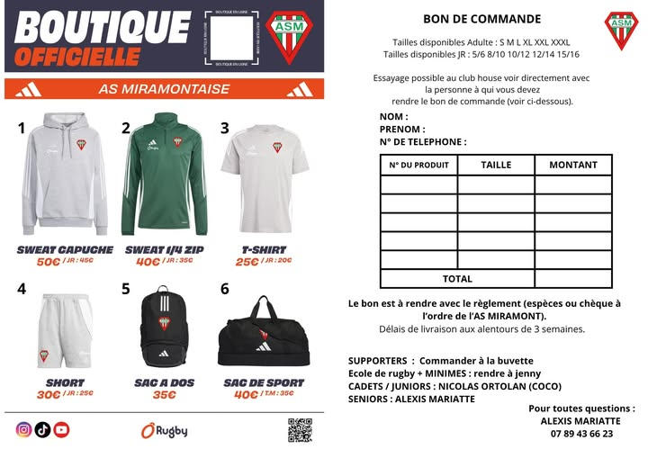

En plus de mon rôle de joueur et d’entraîneur, je suis également impliqué dans l’association des joueurs de l’ASM Rugby Miramont-de-Guyenne. Cette association participe activement à la vie et au dynamisme du club en organisant différents événements et actions tout au long de l’année.
L’objectif de cette association est de faire vivre le club au-delà du terrain, en créant des moments de convivialité qui rassemblent joueurs, bénévoles, supporters et habitants du territoire. Ces événements permettent de renforcer les liens entre les différentes générations du club et de contribuer à l’animation de la vie locale.

Dans ce cadre, je participe à l’organisation de différents événements festifs et sportifs, tels que des soirées ou des repas organisés pour les membres du club et les habitants du village.

Ces événements demandent une véritable organisation : préparation de la communication, mobilisation des bénévoles, mise en place logistique et coordination le jour de l’événement. Ils permettent également de soutenir financièrement certaines activités du club, notamment celles liées à l’école de rugby et aux équipes de jeunes.

Par ailleurs, l’association contribue également à la promotion du club et à son identité, notamment à travers la création et la diffusion de supports de communication pour les événements sportifs ou associatifs.

Elle participe aussi au développement d’initiatives autour de la boutique du club, permettant aux joueurs, supporters et habitants de porter les couleurs de l’ASM et de renforcer le sentiment d’appartenance au club.

Cet engagement au sein de l’association des joueurs me permet de participer activement à la vie associative locale, tout en développant des compétences en organisation d’événements, travail collectif, communication et gestion de projets associatifs.
Il s’inscrit dans la continuité de mon engagement au sein de l’ASM et illustre mon attachement à un club qui joue un rôle important dans la dynamique sociale et sportive de Miramont-de-Guyenne.